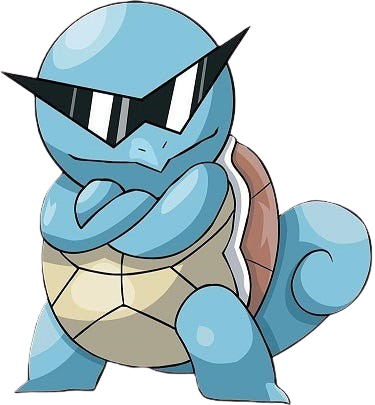

Bulbasaur
Bulbasaur is a small, quadrupedal amphibian Pokémon that has blue-green skin with darker patches. It has red eyes with white pupils, pointed, ear-like structures on top of its head, and a short, blunt snout with a wide mouth.

Charmander
Charmander is a small, bipedal reptilian Pokémon that has orange and red scales. It has a long, pointed snout with a wide mouth and a forked tail.

Squirtle
Squirtle is a small, turtle-like Pokémon with a blue shell. It has a short, blunt snout and small, round eyes.